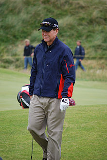

Eldrick Tont "Tiger" Woods[(d. 30 Aralık 1975) tüm zamanların en başarılı golfçüsü. Dünya birincisi olarak, 2008'de 110 milyon $ almıştır ve saniyede 148 $ kazanmaktadır.
1997 Masters Turnuvası'nı 12 vuruş farkla kazanarak rekor kırmıştır. Woods bu büyük turnuvayı kazanan ilk siyahi golfçüdür.
TOM WATSON
5

Thomas Sturges Watson (d. 4 Eylül 1949), Amerikalı golfçü. Kariyerini Champions Tour'da sürdürmektedir. Sekiz büyük turnuva şampiyonluğu bulunmaktadır. 1978-1982 yılları arasında dünya sıralamasının en üst basamağında yer almıştır.